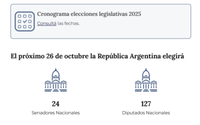

Tu licencia de conducir en Miami
Florida expide licencias compatibles con Real ID. Los requisitos y el proceso son distintos a los de Argentina.
Información útil para vivir, trabajar y participar en la comunidad argentina de Miami.
Florida expide licencias compatibles con Real ID. Los requisitos y el proceso son distintos a los de Argentina.

MIArgentina promueve que los argentinos mantengan actualizado su domicilio y conozcan los requisitos para votar.

La comunidad latina tiene un papel cada vez más importante en la economía y la vida cultural del país.